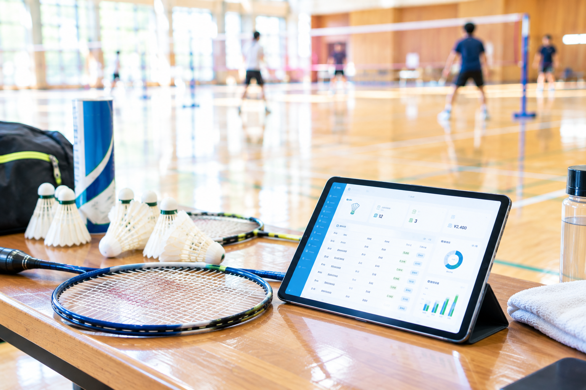
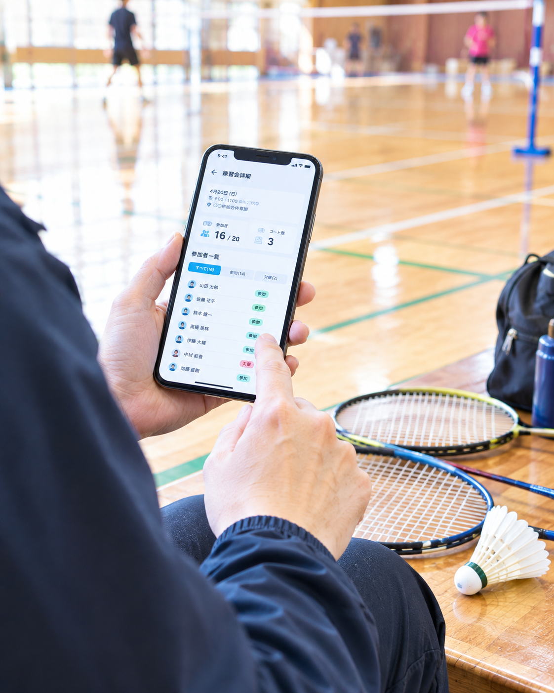

01 ／ PRACTICE
練習会管理
練習日・会場・コート数など、練習会の情報をまとめて管理。
もっと簡単に
できない？

クラブ運営に必要な管理を、ひとつのシステムにまとめました。
練習会の登録から参加者管理、会計やシャトル費用まで。
バドミントンクラブの運営を、できるだけシンプルに。
練習日・会場・コート数など、練習会の情報をまとめて管理。

参加メンバーや参加状況を管理。練習会ごとの参加状況を分かりやすく確認できます。
参加費や支出など、クラブのお金をまとめて管理。
シャトル代など、バドミントンクラブ特有の費用も管理。
PCだけでなく、タブレット・スマートフォンからも利用。
開催日・会場・コート数などを登録。
参加するメンバーを登録・確認。
参加費や支出、シャトル費用などを確認。
PC・タブレット・スマートフォン。使う場所に合わせて、同じ情報にアクセスできます。
バラバラになりがちなクラブ運営情報をまとめて管理。
参加費や費用などの管理を簡単に。
運営にかかる負担を減らして、仲間と過ごす時間へ。
運営するために、
バドミントンをしているわけじゃない。
このシステムは、実際にバドミントンクラブを運営する中で生まれました。
「もっと運営を簡単にしたい。」
「もっとバドミントンを楽しみたい。」
そんな実体験から、クラブ運営に必要な機能をまとめています。